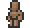

Mannequin
| Mannequin | |
|---|---|
|  | |
| Statistics | |
| Type | Furniture |
| Placeable | Yes |
| Dimensions | 2 wide3 high |
| Max stack | 250 |
| Use time | 14 |
| Tool | Hammer |
The Mannequin is a Decorative Furniture item that can be crafted using twenty Wood and can be placed on top of solid blocks, but not on wooden platforms or other furniture. It can be used to hold Armor and Vanity items. It is not possible to place Familiar clothes on a Mannequin.
Crafting
Recipe
| Crafting Station | ||
|---|---|---|
| Ingredient(s) | Amount | |
| Wood | 20 | |
| Result | ||
| Mannequin | 1 | |
History
- 1.1: Introduced.
| Decorative items |
|---|
| Banner Bathtub Bench Book Coral Dresser Piano Sign Throne Toilet Mannequin Crystal Ball |